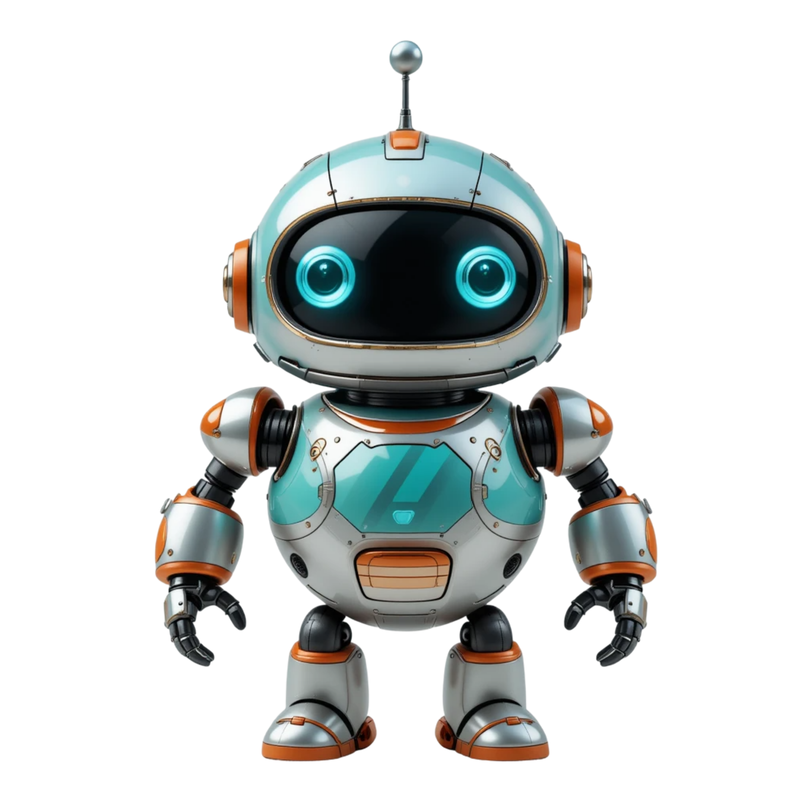

← Terug naar AMAI
Interactieve les · 10–14 jaar
De Grote AI Puzzel
Klik op een puzzelstukje om te ontdekken hoe AI écht werkt. Ontgrendel ze allemaal!
0 van 6 stukjes ontgrendeld
0%

🤖 AMAI Robot zegt:
Klik op een puzzelstukje om te ontdekken hoe AI écht werkt. Ontgrendel ze allemaal!
